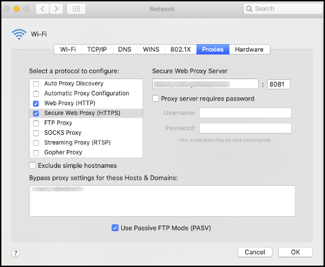
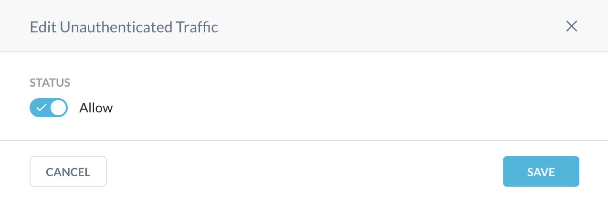
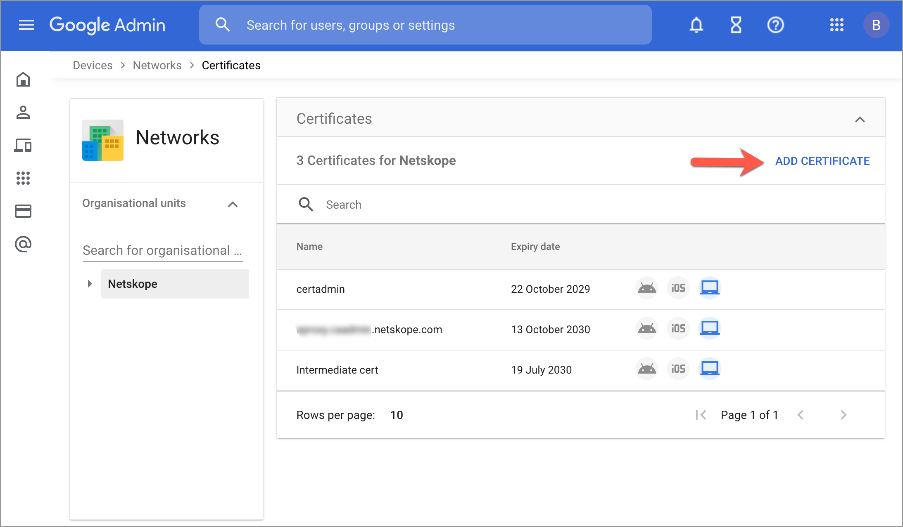
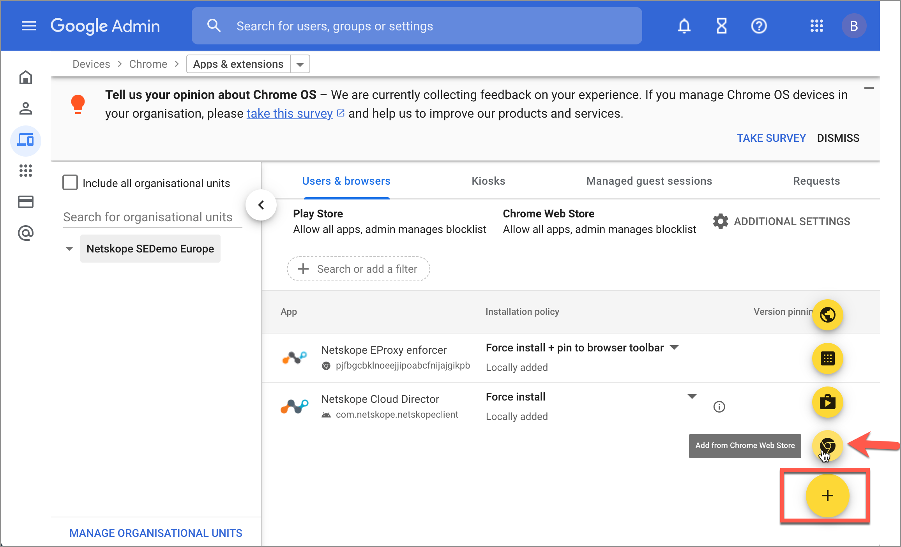
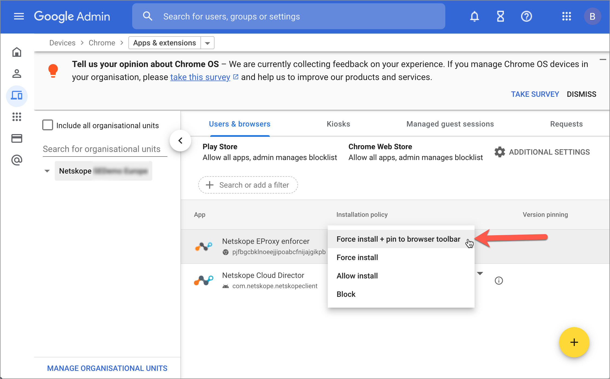
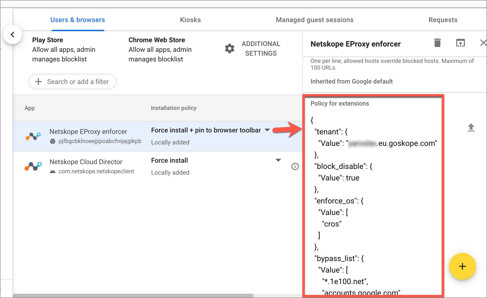
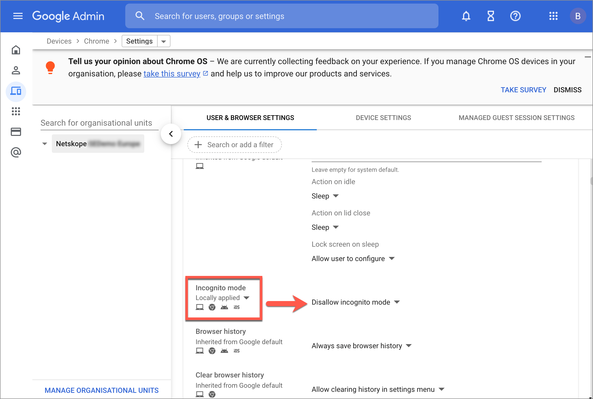
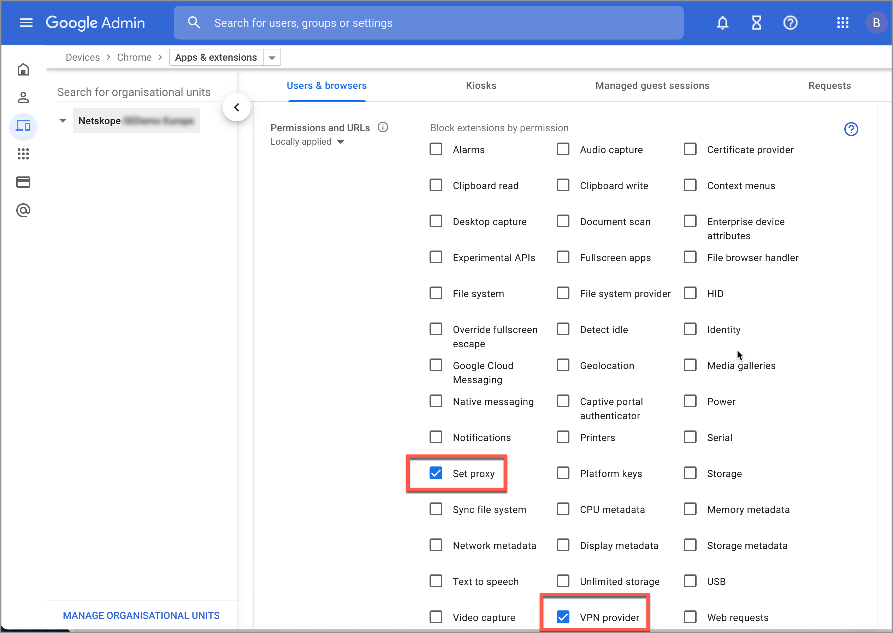
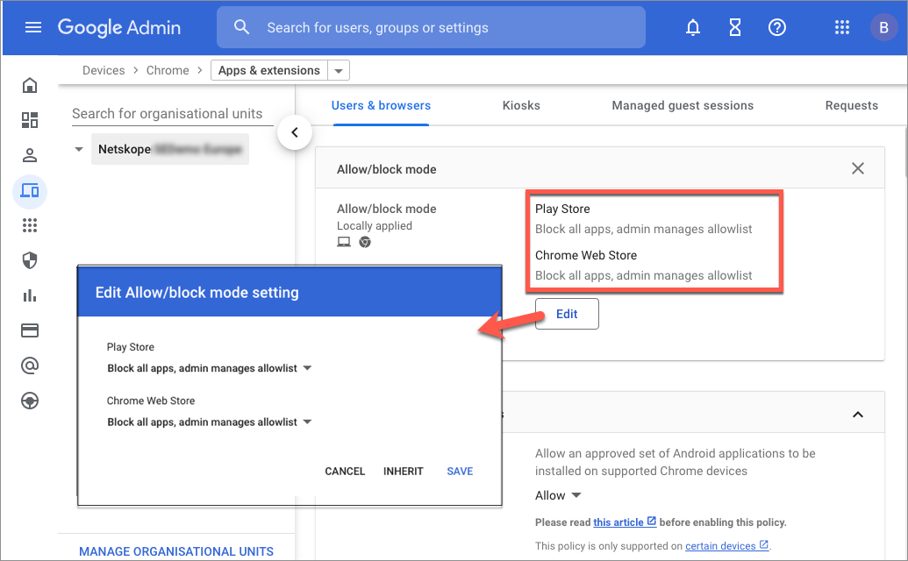
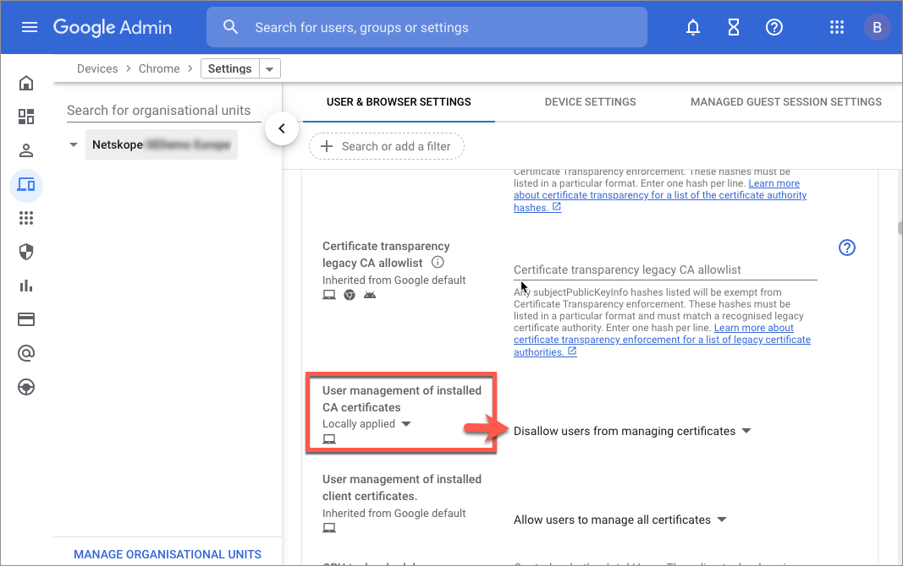

Explicit Proxy
Explicit Proxy provides a new method for steering traffic from any device to the Netskope Cloud using a Proxy Auto Configuration (PAC) file. A PAC file tells a browser to forward traffic to a proxy server instead of the destination server. When a user opens a browser, the browser sends a request for the default PAC file, and then uses the instructions to forward traffic to the Netskope URL in the PAC file.
Note
For Chromebooks we recommend using the Netskope Chrome extension. To learn more, see the Traffic Steering from Chromebooks section
You can download a PAC file template your Netskope tenant to create your own custom PAC file. Your modified PAC file can be hosted on-premises so that devices can retrieve it automatically. User identity can be retrieved with the help of an IdP that uses SAML 2.0, and this can be configured in the Netskope UI under Settings > Security Cloud Platform > Forward Proxy > SAML.
Explicit Proxy can be used these ways:
Modify the PAC file template (or modify an existing PAC file), and then distribute your PAC file. Click Download Sample PAC File on the Explicit Proxy page to get a PAC file template you can modify.
Configure SAML 2.0 authentication using SAML Forward Proxy. The user's browser must be set up to use port
8081. Authentication is used to get the identity of the user, which can be applied in Policies, for example. To enable authentication after configuring the forward proxy, refer to Forward Proxy Authentication.Endpoints can be configured to use the proxy directly. For example:
 HTTP and HTTPS traffic (typically on ports 80, and 443, but Netskope also supports custom ports) for the Explicit Proxy. Do not send any other traffic through these ports.
Consider these factors for Box endpoints when using explicit proxy:
Policies that are user specific for access to specific apps, instances, or SSL decryption, etc., will not be enforced.
Events (Application/Page) will not show user information, but will show the IP address of the user.
If the Netskope root CA has not been previously installed on the endpoint, download it from the Netskope UI at Settings > Security Cloud Platform > Manage > Certificates > Signing CA and install it on your endpoints (for macOS: install it in Certificates from the Keychain Access tool). There is a separate certificate available for remote users.
When finished with the above preparations, go to Settings > Security Cloud Platform > Traffic Steering > Explicit Proxy.
 |
There are three sections on this page:
Explicit Proxy Destination: Provides the explicit proxy destination and a link to download the Netskope Certificate for remote users (also available on the Certificates CA Signing .
Tenant Lookup Service: Prompts remote users to enter the Tenant Name shown here. Once configured, users will be prompted for an organization (tenant) name that is provided to them by their administrators. Once validated, users will be redirected to authenticate with their IdP before being able to access the web. Authentication is mandatory for remote users.
To view an example of the notification users see, click Preview.
IP Address Allowlist & User Identity: Enables you to allow unauthenticated traffic.
To use this feature, click Edit and enable the Allow toggle.
 This section also allows you to specify source egress IP addresses for your on-premises users.
To allowlist your on-premises source egress IP address(es) in the Netskope UI:
Go to the IP Address Allowlist & User Identity section, click Add IP Address.
Enter a name and the source egress IP address for your office location to allowlist so that Netskope will accept the traffic from devices behind the IP address or CIDR. Multiple IP addresses need to be separated by a comma, or you can add them separately using the Add Another button. When finished, click Add.

To edit or delete an IP address or range, click the  icon. Only one IP address or CIDR can be edited at a time.
icon. Only one IP address or CIDR can be edited at a time.
 |
Now your web traffic will be sent to the Netskope Cloud and users will be asked to authenticate to the IdP once they attempt to navigate to any website. To see events in Skope IT, go to Skope IT > Page Events and click the  icon to view page event details. Explicit proxy will be shown as the access method.
icon to view page event details. Explicit proxy will be shown as the access method.
 |
PAC File Template
Modify this PAC file template for Explicit Proxy. Enter the domains not to proxy, the substrings (HTTP/HTTPS) to proxy, and your tenant name.
function FindProxyForURL(url, host) {
/* Normalize the URL for pattern matching */
url = url.toLowerCase();
host = host.toLowerCase();
/* Don't proxy local hostnames */
if (isPlainHostName(host)) {
return 'DIRECT';
}
/* Don't proxy IDP servers. */
/*
if ((dnsDomainIs(host, '.okta.com'))
{
return 'DIRECT'
}
*/
/* Don't proxy for domains. */
/*
if ((dnsDomainIs(host, '.domain-example1.com')) ||
(dnsDomainIs(host, '.domain-example2.com')))
{
return 'DIRECT'
}
*/
if (url.substring(0, 5) === 'http:' || url.substring(0, 6) === 'https:') {
return 'PROXY eproxy-<tenant-name>.goskope.com:8081';
}
return 'DIRECT';
}Traffic Steering from Chromebooks
This section illustrates using explicit proxy to steer SWG / CASB traffic from managed Chromebooks using the Netskope Chrome extension. To learn more about steering private app traffic, see the Steering Private App Traffic section.
Prerequisites for Steering SWG / CASB Traffic in Chromebooks - Configure your tenant with SAML forward proxy authentication.
You can push the Netskope Chrome extension through Google Workspace Admin console and pre-provision necessary configuration. The procedure has the following steps:
Installing the Netskope TLS CA Certificate
Install the TLS CA certificates to allow TLS decryption of traffic from managed Chromebooks. Before you proceed, download the certificates from the Netskope tenant admin console.
Downloading Certificates from Netskope Tenant
Login to Netskope tenant as administrator.
Go to Settings > Manage > Certificates > Signing CA.
Download the following certificates
Root CA (Remote Users)
Root CA
Intermediate CA
Note
If you have configured your own signing CA certificate, import it together with all necessary intermediate CAs in addition to Root CA (Remote users) mentioned above.
Installing Certificates in Google Workspace Admin Console
Login to Google Workspace Admin console.
Go to Devices > Networks > Certificates and add the certificates download from your Netskope tenant.

Setting Proxy Mode to Allow User Configuration
In the Google Workspace Admin console go to Devices > Chrome > Settings > Users & browsers.
Select organizational units that should use the extension and confirm that Proxy mode is set to Allow user to configure (this is the default):

Configuring the Netskope Chrome Extension
In Google Workspace Admin console go to Devices > Chrome > Apps & extensions > Users & browsers.
Select organizational units that should be provisioned with the extension.
On the bottom right of the screen click the plus icon to add an extension from Chrome Web Store.
In the pop-up window, search Netskope in the Chrome store to get the Netskope Chrome extension.

To install the Netskope EProxy enforcer extension, click the chrome extension and then in the extension's page click the Select button.
Set the Installation Policy to Force Install + pin to browser toolbar option.
Click on the Netskope Eproxy enforcer extension to specify JSON objects as Policy for extensions
The JSON object has the following format:
{"tenant": { "Value": "<full-tenant-name>" }, "block_disable": { "Value": <option> }, "enforce_os": { "Value": ["<os-name>"] }, "bypass_list": { "Value": [ "<comma-seperated_url_lists>" ] } }tenant - The JSON object must contain the tenant name in format of
"tenant": {"Value":"<tenant-name>"}. For example:"tenant": {"Value":"myorg.eu.goskope.com"}where myorg.eu.goskope.com is the full tenant name. The tenant name must include the goskope.com suffix.block_disable - A boolean value to disallow users from disabling steering to Netskope. For example:
"block_disable": {"Value": true}enforce_os - An array of strings that specify where the Netskope Chrome extension will operate. If this parameter is not specified, the extension will automatically be installed on all devices for a given user profile even if other Netskope steering methods are supposed to be used on those devices.
Example of a valid entry:
enforce_os":{"Value":["cros"]}Valid operating system definitions are:
For ChromeOS, specify
crosFor Microsoft Windows, specify
winFor Apple macOS, specify
macFor Google Android , specify
android.Note
Google Chrome on Android does not support extensions, so this parameter is valid only for third-party Chromium based browsers
For non-ChromeOS linux, specify
linuxFor OpenBSD, specify
openBSD
bypass_list - An array of strings to identify the bypass settings for Netskope steering.This list may contain the following entries:
Hostname :
[_<scheme>_://]_<host-pattern>_[:_<port>_]. Match all hostnames that match _<host-pattern>_. A leading "." is interpreted as a "*." . Examples: "foobar.com", "*foobar.com", "*.foobar.com", "*foobar.com:99", "https://x.*.y.com:99".Pattern
Matches
Does not Match
.foobar.com
www.foobar.com
foobar.com
*.foobar.com
www.foobar.com
foobar.com
foobar.com
foobar.com
www.foobar.com
*foobar.com
foobar.com, www.foobar.com, foofoobar.com
Simple Hostname:
<local>. Matches simple hostnames. A simple hostname is one that contains no dots and is not an IP literal. For instanceexampleandlocalhostare simple hostnames. However,example.com,example.,and[::1]are not.IP Address:
[_<scheme>_://]_<ip-literal>_[:_<port>_]. Match URLs that are IP address literals. Conceptually this is similar to the first case, but with special cases to handle IP literal canonicalization. For example, matching on[0:0:0::1]is the same as matching on[::1]because the IPv6 canonicalization is done internally. Examples:127.0.1, [0:0::1], [::1], http://[::1]:99.IP Address with Range:
_<ip-literal>_/_<prefix-length-in-bits>_. Match any URL containing an IP literal within the given range. The IP range is specified using CIDR notation. Examples:"192.168.1.1/16", "fefe:13::abc/33"
List of domains recommended to be bypassed by Google:
"bypass_list":{ "Value":[ "*.1e100.net", "accounts.google.com", "accounts.google.co.uk", "accounts.gstatic.com", "accounts.youtube.com", "alt*.gstatic.com", "chromeos-ca.gstatic.com", "chromeosquirksserver-pa.googleapis.com", "clients1.google.com", "clients2.google.com", "clients3.google.com", "clients4.google.com", "clients2.googleusercontent.com", "cloudsearch.googleapis.com", "commondatastorage.googleapis.com", "cros-omahaproxy.appspot.com", "dl.google.com", "dl-ssl.google.com", "firebaseperusertopics-pa.googleapis.com", "*.googleusercontent.com", "*.gvt1.com", "gweb-gettingstartedguide.appspot.com", "m.google.com", "omahaproxy.appspot.com", "pack.google.com", "policies.google.com", "printerconfigurations.googleusercontent.com", "safebrowsing-cache.google.com", "safebrowsing.google.com", "ssl.gstatic.com", "storage.googleapis.com", "tools.google.com", "www.googleapis.com", "www.gstatic.com" ] }Note
If using non-Google IdP ensure that you add relevant domains for SAML auth to bypass to this list.
pac_data - A static PAC file data to be used instead of the bypass_list. The provided PAC file should point the steered traffic to eproxy-<tenant-name>.goskope.com:8081.
Note
If both pac_data and bypass_list are provided, only the pac_data is used.
Example of a valid pac_data entry is:
"pac_data":{"Value":"function FindProxyForURL(url, host) { if (!shExpMatch(url, \"https://*\") && !shExpMatch(url, \"http://*\")) return \"DIRECT\"; var ExpList = [ \"*.1e100.net\", \"accounts.google.com\", \"accounts.google.co.uk\", \"accounts.gstatic.com\", \"accounts.youtube.com\", \"alt*.gstatic.com\", \"chromeos-ca.gstatic.com\", \"chromeosquirksserver-pa.googleapis.com\", \"clients1.google.com\", \"clients2.google.com\", \"clients3.google.com\", \"clients4.google.com\", \"clients2.googleusercontent.com\", \"cloudsearch.googleapis.com\", \"commondatastorage.googleapis.com\", \"cros-omahaproxy.appspot.com\", \"dl.google.com\", \"dl-ssl.google.com\", \"firebaseperusertopics-pa.googleapis.com\", \"*.googleusercontent.com\", \"*.gvt1.com\", \"gweb-gettingstartedguide.appspot.com\", \"m.google.com\", \"omahaproxy.appspot.com\", \"pack.google.com\", \"policies.google.com\", \"printerconfigurations.googleusercontent.com\", \"safebrowsing-cache.google.com\", \"safebrowsing.google.com\", \"ssl.gstatic.com\", \"storage.googleapis.com\", \"tools.google.com\", \"www.googleapis.com\", \"www.gstatic.com\"]; for (var i=0; i<ExpList.length; i++) { if (shExpMatch(host, ExpList[i])) return \"DIRECT\" ; } var proxy = \"PROXY eproxy-myorg.eu.goskope.com:8081\"; return proxy; }"}After providing the policy for the extension, click Save on the top right corner to save the settings.
Verifying Policy Propagation
To verify if policy is correctly propagated, on a managed Chromebook navigate to chrome://policy. At the bottom of the page you will have a formatted table for Netskope EProxy enforcer policies.
Hardening managed Chromebook configuration
To ensure that users are not able to bypass the steering to Netskope, we recommend that you configure the following settings in Google Workspace Admin console:
Disallow incognito mode in Devices > Chrome > Settings > Users & browsers
Block unauthorized extensions with Set Proxy or VPN Provider permissions in Devices > Chrome > Apps & extensions > Users & browsers > Additional Settings and disable any user-installed extensions (such as Ad Blockers and NoScript) to mess with goskope.com domains by adding *://*.goskope.com to Runtime blocked host list.
Block all apps not in the allow list for Play Store and Chrome Web Store in Devices > Chrome > Apps & extensions > Users & Browsers > Additional Settings.
Prevent users from managing certificates, so they would not be able to tamper with Netskope CA pushed by Google Workspace Admin in Devices > Chrome > Settings > Users & Browsers

Steering Private App Traffic
The Chrome extension can work alongside the Netskope Cloud Director for Android that is used for NPA (Netskope Private Access) steering on Chromebooks. Ensure that you add private domains to the bypass_list or the PAC file so they are not steered to the explicit proxy.